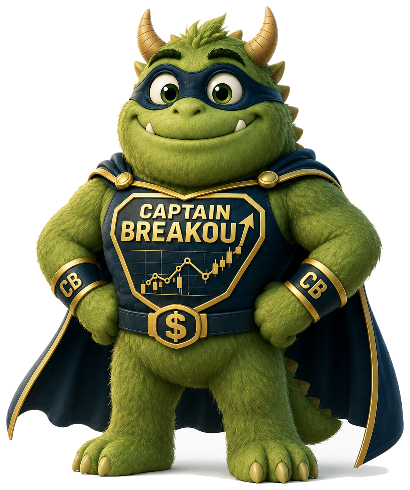

MONSTER RATING™
A readable 0–100 summary of evidence strength, with no claim of certainty.
SEARCH THE MARKET. FOLLOW THE EVIDENCE.
YOU CAN’T BUY HISTORY.
BUT YOU CAN LEARN ITS FINGERPRINTS.™
Study the fingerprints left by yesterday’s market leaders, then search today’s market for companies beginning to leave compelling evidence of their own.

Enter one of the 15 Visual Case Library tickers. Ratings shown here are clearly labeled educational demonstrations, not internally verified live recommendations.
THE SCREEN DOES NOT FIND GUARANTEED WINNERS. IT FINDS EVIDENCE.
Five direct doors into the working website. External market information may be delayed. Internally verified live ratings remain a separate production milestone.
Next Year’s Monsters™ is not another stock list. It is a disciplined way to recognize the businesses, catalysts, and market structures that can produce tomorrow’s leaders.
This site turns that field guide into a living system: searchable, updated, historically accountable, and clear about the evidence behind every rating.
EXPLORE THE SYSTEM →Monster Rating™ is the front door, not the final answer. Every score opens into the evidence that created it.
A readable 0–100 summary of evidence strength, with no claim of certainty.
Growth, margins, cash flow, leadership, execution, catalysts, and risk.
The sector, macro, rates, and leadership conditions surrounding the stock.
The moment the business evidence or price behavior materially changed.
What is actually moving the stock: company, sector, macro, or sympathy.
VCL™ means Visual Case Library. We use dated charts to show what a stock looked like before, during, and after a major move, so visitors can compare today’s evidence with real past examples.

SPOT THE SETUP BEFORE THE CROWD.
YOUR GUIDE TO THE HUNT
He represents disciplined preparation, visual evidence, and the courage to ask what the chart and the business are really saying.
MEET CAPTAIN BREAKOUT